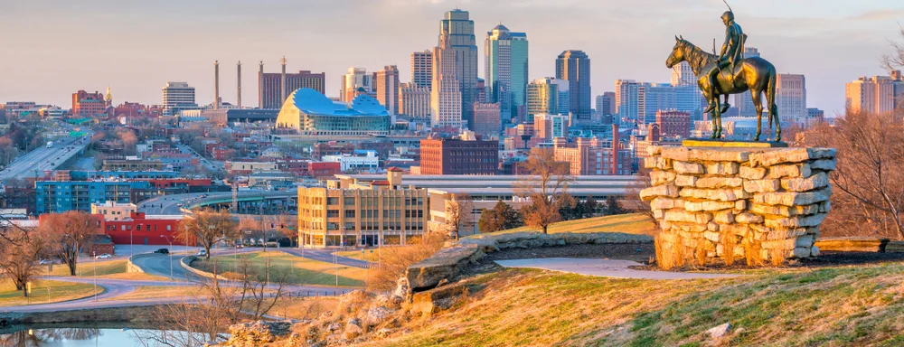

Cannabis Industry Opportunities
Kansas
In 2018, Kansas took a historic step by passing SB 282, a law that officially acknowledged the medical efficacy of cannabis for the first time. Signed by former Governor Jeff Colyer in May, the bill changed the legal definition of "marijuana" to exclude cannabidiol (CBD). This marked a significant shift in the state’s stance on medical cannabis, leaving Idaho as the only U.S. state yet to recognize its medical potential. The law went into effect on May 24, 2018.
Despite this progress, the law comes with considerable limitations. Kansas state law still prohibits tetrahydrocannabinols (THC), meaning patients seeking relief through CBD may face difficulties. Many CBD products contain at least trace amounts of THC—often up to 0.3%, which is the federal threshold for hemp. Additionally, SB 282 does not provide for in-state access to CBD oil, making it challenging for patients to obtain regulated and lab-tested products.
Consumers should also be aware of the risks associated with unregulated CBD products, which are commonly found online or in retail stores. Many of these products are not subject to testing and may contain inaccurate CBD levels, THC, or harmful substances like heavy metals. In contrast, CBD oil sold in licensed dispensaries in states such as Colorado undergoes rigorous testing to ensure quality and safety. However, for Kansas patients, accessing these regulated products can be both expensive and logistically difficult.
Despite its shortcomings, SB 282 represents a crucial step toward broader medical cannabis access in Kansas. Research has shown that regulated medical cannabis can provide relief for patients suffering from conditions such as cancer, epilepsy, and multiple sclerosis. Additionally, studies have linked medical cannabis legalization to a 25% reduction in opioid overdose deaths, underscoring its potential public health benefits. While the journey toward comprehensive medical cannabis reform in Kansas is ongoing, the passage of SB 282 signals a shift in the right direction.
February 2021. Gov. Laura Kelly endorses a bill that would legalize medical marijuana, as well as create a system for regulating the cultivation, retail-sales, and dispensing of medical cannabis.
May 2019. House Bill 2244 was signed into law, allowing patients with severe conditions to have an affirmative defense for the possession of low-THC CBD oil.
May 2017. Senate Bill 112 was signed into law, reducing penalties for possession of marijuana paraphernalia. While this bill does not affect the penalties for growing marijuana, possession of materials used to cultivate is reduced to a fine of $1000, and/or six months in jail.
July 2016. House Bill 2462 went into effect, reducing penalties for marijuana possession. First time possession is reduced to six months, cutting the original penalty of one year in jail in half. Second offenses are no longer felonies but misdemeanors, limiting the penalty to a one year sentence.
Call us at (702) 533-4899 or please fill out our contact form!
Book a consultation with one of our experts and let us guide you.
No statistics at the time of writing for Kansas
If you are just starting your marijuana business, the best next step is to create a Business Plan to educate your team and prepare for the marijuana business license application process.
If you are ready to apply for a Marijuana Business License in Kansas, please contact us or call our offices to set up an appointment. You can also explore other state opportunities or fill out our Contact Form to discuss strategies such as investment or partnership opportunities.
Our headquarters are located in the San Francisco Bay Area and Las Vegas Nevada. We offer a full suite of custom solutions for your cannabis business including business planning, license application development, and investment opportunities. If you are in need of assistance, please call us during business hours listed below. Thank you.
Operating Hours
Mon - Fri: 8am - 5pm PST
Head Office
2300 West Sahara Avenue Suite 800 Las Vegas, NV 89102

services@greenrushconsulting.com
© 2025 Green Rush Consulting LLC. All Rights Reserved.